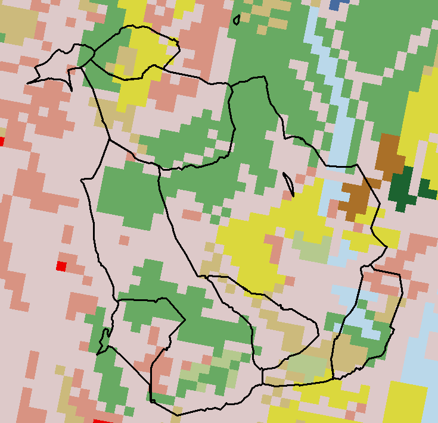

(ny <- AOI::aoi_get(state = "NY") |>
st_transform(5070) |>
dplyr::select(name))
#> Simple feature collection with 1 feature and 1 field
#> Geometry type: MULTIPOLYGON
#> Dimension: XY
#> Bounding box: xmin: 1319502 ymin: 2149150 xmax: 1997508 ymax: 2658543
#> Projected CRS: NAD83 / Conus Albers
#> name geometry
#> 1 New York MULTIPOLYGON (((1661335 263...Lecture 26
Introduction to Raster Data
Photos and Computers …


Aerial Imagery (really just a photo 😄)

What is stored in these cells?
Categorical Values (integer/factor)

Continuous Values (numeric)

Spectral Values
- Either Color, or sensor

Raster images seek to discritize the real world into cell-based values
- Again either integer (categorical), continuous, or signal

Resolution drives image clarity (granulairty)
- Higher resolution (smaller cells) = more detail, but bigger data!


All rasters have an extent!
This is the same extent as a bounding box
Can be described as 4 values (xmin,ymin,xmax,ymax)

Implicit Coordinates
Unlike vector data, the raster data model stores the coordinate of the grid cells indirectly
Coordinates are derived from the reference (Xmin,Ymin) the resolution, and the cell index (e.g. [100,150])
For example: If we want the coordinates of a value in the 3rd row and the 40th column of a raster matrix, we have to move from the origin (Xmin, Ymin) (3 x Xres) in x-direction and (40 x Yres) in y-direction
Multi-layers

In many cases multi-variable raster data sets are used. Variables can related to time or measurements
A SpatRaster is a collection of objects with the same spatial extent and resolution.
In essence it is a list of objects, or, a 3D array.
1. Extent
When dealing with raster data, the extent is a fondational component of the raster data structure
- That is, we need to know the area the raster is covering!
Image Source: National Ecological Observatory Network (NEON)
2. Discretization
Once we know the extent, we need to know how that space is split up
Two complimentary bit of information can tell us this:
- Resolution (res)
- Number of row and number of columns (nrow/ncol)
Image Source: National Ecological Observatory Network (NEON)
Find elevation data for Fort Collins:
- Define the AOI
- Read data from elevation map tiles, for a specific zoom, and crop to the AOI
- The resulting raster …
(elev = rast("data/foco-elev.tif"))
#> class : SpatRaster
#> dimensions : 725, 572, 1 (nrow, ncol, nlyr)
#> resolution : 30, 30 (x, y)
#> extent : -769695, -752535, 1978485, 2000235 (xmin, xmax, ymin, ymax)
#> coord. ref. : +proj=aea +lat_0=23 +lon_0=-96 +lat_1=29.5 +lat_2=45.5 +x_0=0 +y_0=0 +datum=NAD83 +units=m +no_defs
#> source : foco-elev.tif
#> name : dem
#> min value : 146730
#> max value : 197781

Google Color Picker

Replacement
- Raster values can be replaced on a conditional statements
- Doing this changes the underlying data!
- If you want to retain the original data, you must make a copy of the base layer